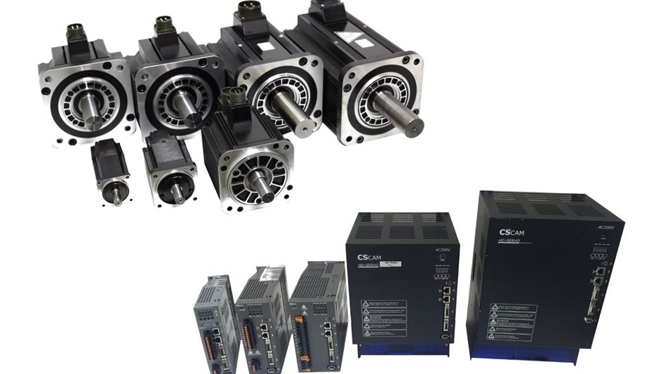
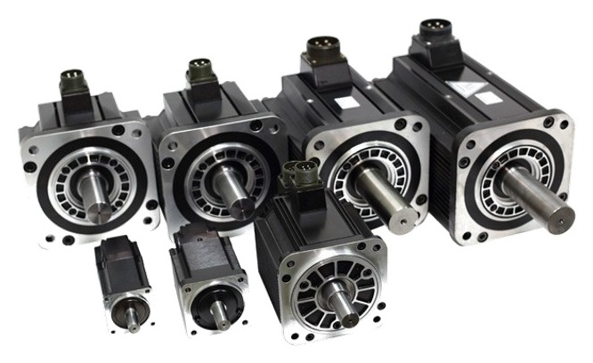
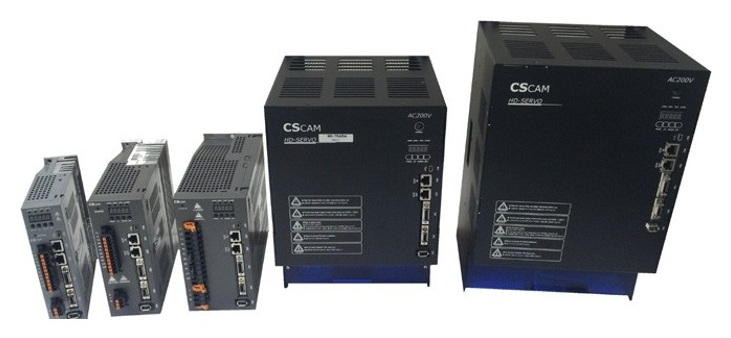

From 400W to 11kW — drives and motors in one lineup.

| Voltage | 220V | ||||||||||||
|---|---|---|---|---|---|---|---|---|---|---|---|---|---|
| Flange Size | 40 | 60 | 80 | 130 | 180 | ||||||||
| Drive Model (SD-) | 04A | 04A | 04A | 10A | 10A | 06A | 15A | 20A | 20A | 30A | 55A | 75A | 110A |
| Motor Model (SMG-/SMA-) | 01A□A | 02A□A | 04A□A | 04A□SA | 08A□A | 05A□A | 13A□A | 20A□A | 20A□A | 30A□A | 44A□A | 55A□A | 75A□A |
| Rated Output (kW) | 0.1 | 0.2 | 0.4 | 0.4 | 0.75 | 0.45 | 1.3 | 2 | 1.8 | 2.9 | 4.4 | 5.5 | 7.5 |
| Rated Torque (N·m) | 0.312 | 0.637 | 1.27 | 0.91 | 2.39 | 2.83 | 8.3 | 11.3 | 11.3 | 18.4 | 28.2 | 34.8 | 47.8 |
| Instantaneous Max. Torque (N·m) | 0.1 | 2.23 | 4.46 | 6.69 | 7.16 | 8.7 | 23.0 | 27.6 | 28.4 | 44.7 | 71.0 | 87.3 | 117 |
| Rated Current (Arms) | 0.84 | 1.6 | 2.7 | 4.2 | 4.4 | 3.5 | 10.4 | 16 | 16.5 | 23.6 | 32.4 | 41.8 | 54.2 |
| Instantaneous Max. Current (Arms) | 2.9 | 5.8 | 9.3 | 14.9 | 13.4 | 10.5 | 27 | 42 | 41 | 54 | 83 | 108 | 129 |
| Rated Speed (min⁻¹) | 3000 | 1500 | |||||||||||
| Max. Speed (min⁻¹) | 5000 | 3000 | |||||||||||
| Torque Constant (N·m/Arms) | 0.352 | 0.435 | 0.512 | 0.505 | 0.59 | 0.83 | 0.85 | 0.68 | 0.70 | 0.82 | 0.86 | 0.80 | 0.90 |
| Rotor Inertia*1 (Kg·m²×10⁻⁴) |
0.0525 (0.0739) |
0.259 (0.323) |
0.442 (0.506) |
0.667 (0.744) |
0.672 (0.86) |
7.22 (9.3) |
20.3 (22.4) |
26.7 (34.2) |
31.4 (40.0) |
45.8 (54.3) |
67.3 (75.7) |
88.7 (97.3) |
126 (133.2) |
| Rated Power Rate (kW/s) | 15.2 | 15.7 | 36.5 | 54.7 | 84.8 | 11.0 | 33.5 | 36.1 | 41.3 | 75.1 | 118 | 135 | 183 |
*1) Values in parentheses indicate figures for motors equipped with a holding brake.

| Servo Pack Model (SD-) | 04A | 10A | 15A | 20A | 30A | 55A | 75A |
|---|---|---|---|---|---|---|---|
| Max. Applicable Motor [kW] | 0.4 | 1 | 1.5 | 2 | 3 | 5.5 | 7.5 |
| Rated Output Current [A] | 3 | 6.5 | 11A | 13.5 | 16.5 | 35 | 40 |
| Max. Output Current [A] | 9 | 19.5 | 28A | 40.5 | 49.5 | 96 | 104 |
| Regenerative Resistor | Built-in / External | External | |||||
| Main Circuit [3-Phase: AC200V] | AC200 ~ 230V +10~-15% 50/60Hz | ||||||
| Control Circuit [Single-Phase: AC200V] | AC200 ~ 230V +10~-15% 50/60Hz | ||||||
| Category | Item | Specification |
|---|---|---|
| Main Power Circuit | Input Voltage/Frequency | 3-phase 200V~230V, 50/60Hz |
| Allowable Voltage Variation | within +10% ~ -15% | |
| Control Circuit Power | Input Voltage | Single-phase 200V~230V, 50/60Hz |
| Allowable Voltage Variation | within ±15% | |
| Detector | Detector Type | Incremental 2000–6000[ppr] 15-wire type, 19-bit BiSS encoder, 1Vpp sin/cos encoder |
| Output Signal Type | Differential line driver output. | |
| Detector Resolution | 524,288 per revolution (based on 19-bit encoder) | |
| Detector Power | DC 5V, Max 0.3[A] | |
| Drive Method | Drive Method | Sine-wave PWM control (IGBT-based) |
| Gate Circuit | 1ED020I12-F2 (Max 2.0A) | |
| Protection Function | UVLO (Under Voltage Lockout), Ready, Short Circuit Clamping, Active Miller Clamp, Desaturation Protection, Fault Signal | |
| Speed Control Spec | Frequency Response | Max. 1kHz or higher |
| Speed Command Input | DC0V~±10V (max speed adjustable via parameter), EtherCAT speed command | |
| Speed Variation Rate | ±0.01[%], load variation 0–100% | |
| Acceleration/Deceleration Time | Linear or S-curve acceleration/deceleration | |
| Position Control Spec | Position Input Frequency | 1Mpps, line driver |
| Position Input Type (Pulse) | Direction + pulse, forward pulse + reverse pulse | |
| Position Input Format | Line driver type (RS422) | |
| Torque Control Spec | Torque Command Input | DC0V~±10V (max speed adjustable via parameter) |
| Repeatability | within ±1[%] | |
| Torque-Limited Speed Command | DC0V~±10V (max speed adjustable via parameter) | |
| Built-in Functions | Protection Function | Overcurrent, regenerative overvoltage, overload, encoder fault, main power fault, overheat, excessive regeneration, overspeed, IGBT fault, undervoltage |
| Regenerative Resistor | Built-in by default, external (separate) available | |
| USB Communication | Supports PC USB communication (parameter and variable monitoring) | |
| Temperature Detection | Detects motor temperature, IGBT temperature, and PCB temperature |
For configuration and quotes, browse the full servo motor/drive lineup as well.